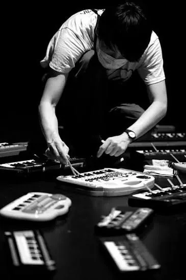
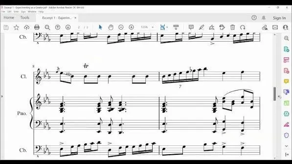

Experimenting with Music
Not a polished final piece: a documented process of trying, refining, and learning from real musical decisions across the world's musical traditions.

- Explain experimenting as a three role process, not a one off task
- Say exactly what goes in the experimentation report and why
- List what to upload, in what order, within which limits
- Self assess draft work against criteria A to D before submitting
Comes after: Exploring Music in Context
Runs alongside: Presenting Music
Assessed: Internally, teacher marked, IB moderated
Jump to:
What is experimenting, really?
Experimenting sits between theory and practice. It's the stage where you take something you've studied and actually try it out: testing ideas, refining choices, and learning from what happens, rather than jumping straight to a finished product.
It isn't one linear task. You move between three roles (researcher, creator, performer), and each one feeds the others: something you find in research reshapes a performance choice; something that goes wrong in a creating exercise sends you back to research. What examiners want to see isn't a flawless outcome, but evidence that your decisions were genuinely informed and that you can explain why you made them.
Key terms to know
Exploring vs. Experimenting
Both components use all three roles: researcher, creator, performer. What changes is the balance between them, and what you're actually being asked to do.
In Exploring Music in Context, there's a bigger focus on the researcher role. In Experimenting with Music, that focus spreads more evenly across all three, if anything slightly less on research than on creating and performing.
The academic, the scholar
- About the product: a piece of finished, presentable work
- Research each piece, then a short practical exercise in the other roles
- Shows you understood a style's features and can respect its conventions
- Demonstrates understanding through creating and an adapted performance
Enjoying the process
- About the process: changing and evolving across three stages
- Push the limits of your knowledge through experimenting, evaluating, and experimenting again
- Ask yourself "what happens if...?" and take real risks
- Develop your chosen stimuli or pieces, not just respond to them
Adapted from the discussion in "Experimenting with Music vs. Exploring Music," International Music Navigator.
The three roles
Every submission moves through all three. Tap a role to see what it looks like in practice.
Researcher

A real excerpt from a student's experimentation report: the score itself becomes evidence.
You investigate music that's relevant to what you want to try, then pull out specific findings that actually shape your practical work, not just background reading for its own sake.
- Analysing music to inform your own creating and performing
- Working out what to try, and why it's worth trying
- Turning findings into a clear rationale for each experiment
- The rationale sections of your experimentation report
- The reasoning behind your choice of context and material
- Citations and source material referenced in your commentary
Creator
Creating doesn't have to mean notation: patching a synth is still experimenting with musical material.
You trial and shape musical ideas (composing, improvising, arranging, remixing), deliberately pushing into less familiar territory rather than repeating what already feels safe.
- Testing how musical elements (rhythm, harmony, texture, form...) behave when manipulated
- Making artistic choices and being able to justify them
- Developing skills you don't already have, not showcasing ones you do
- Three related creating excerpts in your audio evidence
- The "Creating" section of your written report
- Criteria A and B
Performer
The performing role is where interpretation becomes visible, not just heard.
You shape how musical ideas are communicated (technique, interpretation, expression), treating performance itself as something to experiment with, not just execute.
- Trying different interpretive or technical approaches deliberately
- Reflecting on what each approach communicates and why
- Building an independent musical voice through conscious practice, not just repetition
- Three related performing excerpts in your audio evidence
- The "Performing" section of your written report
- Criteria C and D
Choosing your material
Your experiments need to be anchored somewhere. The course frames that anchor with four areas of inquiry and three contexts.
Areas of inquiry
Four lenses for how music functions in the world. Your submission draws on two of these.
Contexts of music
Three lenses for how familiar the material already is to you.
What you submit
Two uploads, each with a fixed internal order. Get the packaging right and the marking is far easier for everyone.
 Upload 1
Upload 1
Experimentation report
- 1Creating section: rationale + commentary
- 2Performing section: rationale + commentary
- 3Track list: exact timings and labels for upload 2
- 4Bibliography: all sources and stimuli cited
Not counted in the word limit: embedded images/diagrams/score excerpts, the track list, and the bibliography.
Audio evidence
- 1Three related creating excerpts: total max 5 minutes
- 2Three related performing excerpts: total max 5 minutes
Compiled as a single audio file, in that order, at a quality that lets every excerpt be clearly heard and assessed.
How it's marked
Four criteria, 28 marks total. Same criteria at SL and HL. Tap a criterion to see the mark bands.
Criterion A: Rationale and commentary for musical experiments in creating
Judges whether your reasoning for the creating experiments actually holds up: is the choice of material justified, and is the explanation of your decisions genuinely convincing rather than just descriptive?
Ask yourself: could someone who's never seen my work follow exactly why I chose this material, and why I made the decisions I did?
States what happened, without much justification behind it.
Reasonable justification, but fairly formulaic or safe.
Purposeful, relevant reasoning that's genuinely convincing.
Criterion B: Practical musical experiments in creating
Judges the creating excerpts themselves, not whether they're polished, but whether they show real experimentation driven by informed decisions.
Ask yourself: do my three excerpts show genuinely different attempts, or three versions of the same safe idea?
Sticks very close to the source material with little development.
Some development, but formulaic and inconsistent decision making.
Purposeful development with proficient decision making.
Imaginative, resourceful development: decisions that are genuinely compelling.
Criterion C: Rationale and commentary for musical experiments in performing
The performing mirror of Criterion A: does your reasoning for the performing experiments hold up, and is the explanation of your interpretive decisions convincing?
Ask yourself: have I explained why I performed it this way, not just what I performed?
States what happened, without much justification behind it.
Reasonable justification, but fairly formulaic or safe.
Purposeful, relevant reasoning that's genuinely convincing.
Criterion D: Practical musical experiments in performing
The performing mirror of Criterion B: do your three performing excerpts show real experimentation, driven by informed decisions about interpretation and technique?
Ask yourself: would a listener actually hear three distinct approaches, or three takes of the same interpretation?
Sticks very close to the source material with little development.
Some development, but formulaic and inconsistent decision making.
Purposeful development with proficient decision making.
Imaginative, resourceful development: decisions that are genuinely compelling.
Before you submit
Distilled from the assessment guidance: the habits that separate a strong submission from a rushed one.

- Log your rationale and commentary in your music journal as you go, rather than trying to reconstruct your reasoning after the fact.
- Choose two areas of inquiry you haven't already used for Exploring Music in Context, to keep your portfolio diverse.
- Make sure every excerpt in your audio is referenced precisely in the report: bars/measures for scores, exact timings for audio.
- Check that all six excerpts (three creating, three performing) are genuinely related to each other, not six unrelated fragments.
- Make sure the final decisions are your own, clearly justified by your research and findings, not just teacher suggested fixes.
- Re read your rationale before finalising: does it actually justify the choice, or just describe what you did?
- If you used any loops across your creating or performing excerpts, make sure every one is self-invented: your own recording, performance, improvisation, or your own MIDI entry. No pre-existing or commercial loops in their original form.